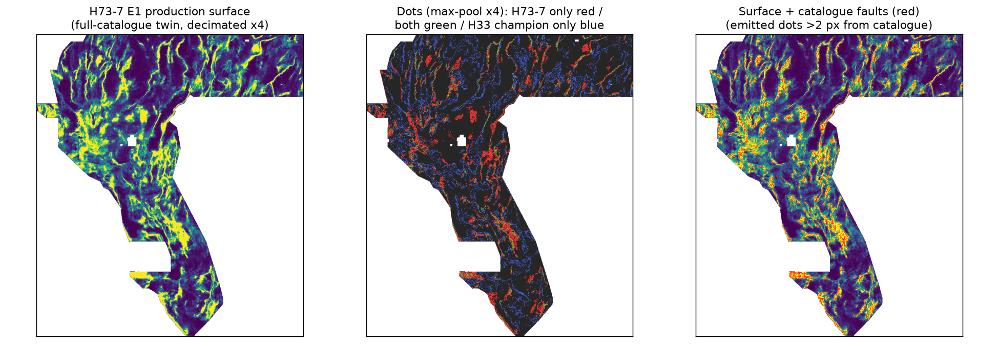

⬇ Current submission candidate — lane H73-7 (hard-fault PU ranker)
| Gate 1 — OK to download? | YES Format-valid on re-read bytes (single-band float32, EPSG:32611, 3730×3292, all 12,279,160 cells finite in [0,1], 0 NaN, nodata=None — the portal error “Predicted values must be in range [0, 1]” cannot trigger), registry-unique under the operative gates. Safe to download. |
|---|---|
| Gate 2 — Recommended to submit? | SELECTOR DECISION — passed its preregistered gate Verdict: PROMOTE (to selector). This is the first lane in this repo to beat the fold-fair champion analogue on the shared holdout instrument (HOLDOUT-DTI 0.1369 vs 0.0939; details below). This repo spends no weekly slot: a human selector must still check the weekly cap on the DrivenData submission page and weigh the transfer caveat before submitting. If you are the selector and accept the caveats, this is the file to submit — see the executive summary. |
⬇ Download gems73-h73-7-hardfault-pu-e1-37654dots-20261021.tif .zip (same single GeoTIFF inside)
Unique submission name: gems73-h73-7-hardfault-pu-e1-37654dots-20261021
Note to paste into the form's Note (optional) field (105/140 chars):
G73 H73-7 E1 hard-fault PU-HGB 37654 dots; HOLDOUT-DTI 0.1369 vs ctrl 0.0939 - beat ctrl, selector review
37,654 dots · 0 within 2 px of the USGS/INGENIOUS catalogue · sha256 a0e4b3f31cb84270b10d19fff8399412a0850f3cffeb77d59b553c7ff0475d67 · validator receipt (independent re-read) · run card
The measured result (HOLDOUT-DTI — not a live score)
| Arm (same instrument, same budget 37,654, same allowed mask) | HOLDOUT-DTI | 95% CI |
|---|---|---|
| E1 — hard-weighted PU-HGB, 41 physical channels (selected) | 0.1369 | [0.1158, 0.1577] |
| E2 — same, unweighted (ablation) | 0.1364 | [0.1156, 0.1554] |
| E3 — hard-weighted, no scarp-family features (ablation) | 0.1211 | [0.1014, 0.1422] |
| Fold-fair H33-analogue control (H19-5 support re-dotted fold-fairly) | 0.0939 | [0.0813, 0.1076] |
| Random dots (control) | 0.0484 | [0.0428, 0.0535] |
| H33 champion scored statically (expected ≈0: its B=2 prune deletes catalogue-covering dots) | 0.0037 | [0.0030, 0.0045] |
Evidence class for every number above: HOLDOUT-DTI, evaluator gems57-pooled-hide-v2,
11,321 withheld catalogue pixels (whole components, buffered, quadrant folds NW/NE/SW/SE),
pooled DTI (α=0.2, β=0.8, 300 m triangular kernel), paired 20 km spatial-cluster bootstrap (1,000 draws).
Paired Δ E1 − control = +0.0430 [0.0230, 0.0627] — excludes 0.
Instrument integrity: the control, rebuilt identically to the merged H73-1 lane, reproduced its published 0.093861 exactly (random and static controls also exact) — one unchanged instrument, comparable numbers.
Full data: evidence/holdout_h73-7.json.
Read before spending a slot — three honest caveats
- Transfer is unproven. HOLDOUT-DTI truth is withheld CATALOGUE segments, so this instrument structurally favours catalogue-supervised fields; the hidden expert set was selected for catalogue ABSENCE. Sibling supervised lanes live-scored 0.0286-0.2478 (OWNER-REPORT) despite strong catalogue fit. This card claims a holdout result, never a live score; whether the +0.043 transfers is exactly what one selector-approved slot would test.
- The named mechanism was not the active ingredient on this instrument. E1 (hard-weighted) 0.1369 vs E2 (unweighted) 0.1364: the hard-weighting is nearly inert on this instrument (+0.0005); the measured gain comes from the supervised physical stack itself. E3 without any scarp-family feature still scores 0.1211 > control 0.0939, so geophysics/radiometrics carry independent catalogue-holdout signal. The hypothesis' weighting mechanism is NOT confirmed by this run.
- Literal one-way overlap (IR-73-12). Under the brief's literal forward rule (>70% of my dots within 3 px of one registry raster), this file “fails” against four dense/union rasters (forward 0.71–0.99, worst the 206,895-dot lattice whose halo covers any dot field — IR-73-01). Under the shared tool's operative gates it passes clearly: surface Spearman max 0.2089, dots Spearman max 0.0573, worst mutual overlap 0.5040 (vs the H33 champion: mutual 0.2172, forward 0.2870). Full table in the run card — the selector decides with eyes open.

Left: H73-7 production surface. Centre: emitted dots — H73-7 only (red), shared with the H33 champion within a 4×4 pool cell (green), champion only (blue): the placements are substantially different dot fields. Right: surface under the mapped catalogue (red) — the ranker indeed learned catalogue-style structure, which is both its holdout strength and its transfer risk.
How to submit (selector only)
Exact 30-second procedure, the note text, and the “Predicted values must be in range [0, 1]” fix: executive summary →
Why did GEMSDOE32's h33-h33-2-b2 score 0.2778 — and can it be beaten?
Score class: 0.2778 is OWNER-REPORT (project ledger; no organizer receipt in any inspected repo — IR-73-02).
Everything below about the file's construction is MEASURED-HERE from its bytes (sha256 c55bafc470…), re-verified this session.
- Exact lineage: H33-2-B2 (37,654 dots) ⊂ D2.8 (44,090) ⊂ H19-5 (121,131), zero exceptions. H33-2-B2 is D2.8 with every dot within 2.0 px of the catalogue deleted — 6,436 dots (minimum retained distance 2.236 px). (This site previously printed “1,152 dots from ~38,800” — wrong, corrected; IR-73-11.)
- Dotting raises credit density: DTI = T / (0.2·(T+F) + 0.8·|G|). A non-redundant dot helps only if its kernel credit k > 0.2·DTI ≈ 0.056 at DTI 0.2778. Thinning 121,131 px to ~2.5–2.8 px-spaced dots keeps trace coverage (k ≥ ~0.58 on a covered trace) while paying the 0.2 FP tax once per ~6 px of trace: OWNER-REPORT ladder 0.1922 → 0.2477/0.2600.
- The B=2 prune is free: hidden truth excludes the catalogue, so dots ≤200 m from known traces mostly cover masked, zero-credit traces at full FP cost. Deleting 6,436 of them cost no hidden recall: 0.2600 → 0.2778 family step.
- The field matched the hidden set's likely construction: H19-5 is ~90% scarp/openness-weighted — the same LiDAR-scarp population expert re-mapping adds. Corollary (MEASURED-HERE): the champion scores DTI 0.0067 against the full catalogue, below random — any non-fold-fair catalogue holdout ranks it last (IR-73-06).
Can 0.2778 be beaten? 0.4413? At fixed mass the only lever is mean credit per dot; emission tricks are exhausted (ladder gains +0.0555, +0.0123, +0.0070). Beating 0.2778 needs a better field; 0.4413 (live #1, ORGANIZER-CONFIRMED public leaderboard read 2026-10-21) needs ≈+60% credit density over H33 — not claimed here. H73-7's measured claim is narrower and real: on the shared fold-fair instrument its field beats the champion-analogue control by +46% relative. Whether that transfers to the expert hidden set is the open question one slot would answer.
Hypotheses considered this session (ranked before any run)
Five candidates with layers, physical signature, why each should catch catalogue-missing faults, the named non-fault mimic, expected ΔDTI and cost — frozen in docs/research/hypotheses_h73-7.md and registry/preregistration_h73-7.json. Rank 1 (this lane) was implemented; Rank 2 magnetic contact-termination, Rank 3 radiometric alteration lineaments and Rank 4 drainage deflection remain unimplemented and locally validatable; Rank 5 leaderboard tomography is diagnostic-only and was rejected as unvalidatable. No candidate needed new external data — every layer was already hash-pinned and restored (USGS 3DEP derivatives, USGS GeoDAWN DOI 10.5066/P93LGLVQ derivatives, competition feature stack).
Previous lanes in this repo — archive (download for review only)
DO NOT SUBMIT H73-A blind stepover (gems73-h73a-blind-stepover-…-zeros.tif, 30,762 dots) and
DO NOT SUBMIT hydrothermal permeability corridor (gems73-hydro-permeability-corridor-…-zeros.tif, 37,654 dots):
both are synthetic-generator artifacts that were never scored on the real holdout instrument.
An earlier version of this site promoted them as “one-click submission” files — that was wrong and is corrected here.
The hydro lane's card quoted “HOLDOUT-DTI 0.1112” from a hard-coded demo function; that verdict is void (IR-73-10,
evidence/run_card_hydro_addendum_2026-10-21.json), and the shared tool that produced it now refuses to invent numbers.
Both files remain in docs/downloads/ for audit; submitting either would spend a slot against this repo's own evidence.
DO NOT SUBMIT H73-1 piedmont micro-scarp chain — properly measured, verdict NEGATIVE (HOLDOUT-DTI 0.0548 [0.0417, 0.0688] vs control 0.0939). See its lane page. Negative results are deliverables.
Run card (protocol JSON, abridged on page — full file linked)
{
"hypothesis": "Catalogue pixels that are hardest to see (weak 1 m-LiDAR step, deep basement, gentle detrended slope) are the catalogue subpopulation most similar to expert-added hidden faults; up-weighting them in a physical-feature ranker shifts dotted emission toward covered piedmont faults instead of easy bedrock/range-front traces.",
"mechanism": "Fold-fair HistGradientBoosting PU ranker (300 iters, lr 0.06, 63 leaves) on 41 physical channels (19 official GeoDAWN/topo bands, 10 LiDAR scarp bands, 8 radiometric/extension bands, 4 unsupervised H73-1 components); positives = visible catalogue (48,340 px) weighted 1+2h; negatives = 250,000 footprint px >5 px from VISIBLE faults only; no distance-to-catalogue feature, no scored-raster input. Frozen dotted emission: 37,654 dots, 2.5 px spacing, >2.0 px from visible (production: full) catalogue. Production surface retrained on the full 60,988-px catalogue with the identical recipe.",
"named_non_fault_mimic": "Lithologic contacts and alluvial-fan surfaces (magnetic/gravity/radiometric signature of covered faults without faulting), plus catalogue mapping bias itself - where mappers looked is not where hidden faults are.",
"raster_sha256": "a0e4b3f31cb84270b10d19fff8399412a0850f3cffeb77d59b553c7ff0475d67",
"submission_name": "gems73-h73-7-hardfault-pu-e1-37654dots-20261021",
"submission_note": "G73 H73-7 E1 hard-fault PU-HGB 37654 dots; HOLDOUT-DTI 0.1369 vs ctrl 0.0939 - beat ctrl, selector review",
"verdict": "promote",
"weekly_slots_spent": 0,
"organizer_score": null
}Full card with holdout CIs, canaries, uniqueness tables and validator output: downloads/run_card_h73-7.json · lane page: H73-7 detail →